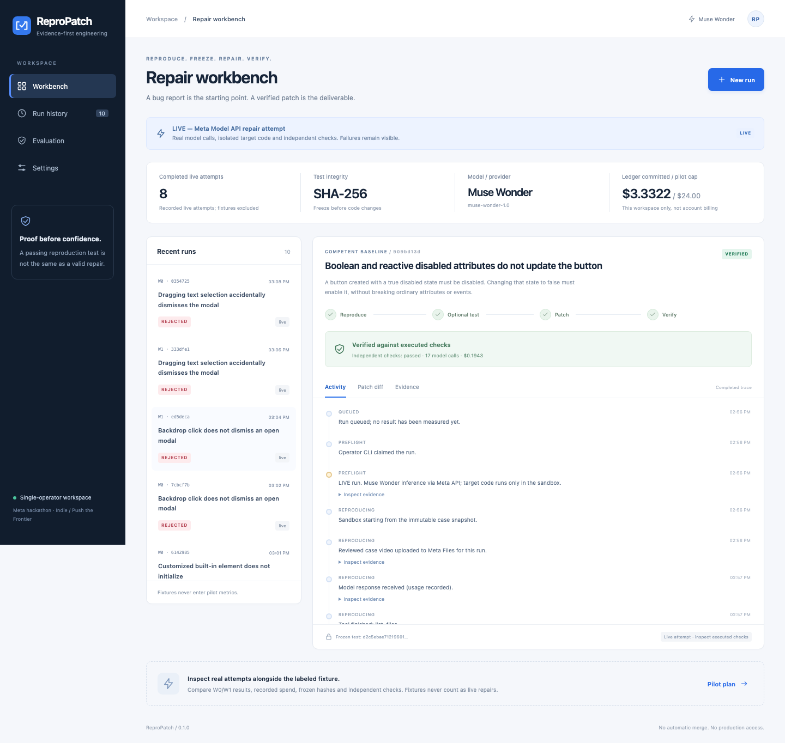

ReproPatch
Show the bug, keep the proof. Bug video → frozen reproduction test → Meta Muse Wonder patch → independent verdict the model never sees.
1 · Replay: VanJS bug 389, first real repair
Shows the recorded order of the 17 Responses calls and their token counts. Per-turn timing was not recorded, so the replay uses a fixed pace. Total recorded duration: 80.9 s.
2 · The bug video the model received (via Meta Files)
Independently recorded reproduction of VanJS issue 389 (MIT). sha256
3 · The frozen reproduction test and the patch
Frozen test (sha256
d2c5ebae…), written during the run and frozen before any source edit was allowed:Patch written by Muse Wonder (sha256
6c50ab57…):4 · All 8 recorded pilot runs
| run | case | method | verdict | Meta calls | USD | seconds | reason |
|---|
W0 = competent baseline, W1 = ReproPatch protocol (no source edits until a confirmed reproduction exists). Both fixed the same 2 bugs and abstained on the same 2. No W1 superiority was observed. Abstentions are stored as REJECTED and never counted as fixes.
4b · Extension, 2 Nov 2026: 3 more real VanJS bugs (6 counted Meta runs)
| run | case | method | verdict | Meta calls | USD | what happened |
|---|
Terminal recording of LIVE run 0870f6fe (vanX.compact bug, W1): real Meta calls, reproduction frozen, patch, independent verdict VERIFIED, USD 0.16. Idle gaps over 1.5 s are compressed.
Terminal recording of LIVE run 152b2437 (SVG link bug, W1): the model said "Fixed" and its own reproduction and public tests passed, but the independent check failed → REJECTED. its patch. Idle gaps over 1.5 s are compressed.
5 · Advisory audit by Meta open weights (Muse Spark Open, via Baseten)
6 · Screens from the real workbench

Workbench after the 8 live runs (captured 27 Oct 2026).
Honest limits
- Costs are metered usage at Meta's published rates, reconciled to the ledger; not an invoice.
- The auditor's numbers are 1 real patch + 1 planted control: they show the integration works, not that the auditor is accurate.